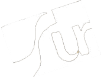
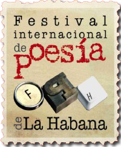
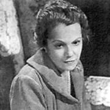
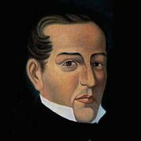
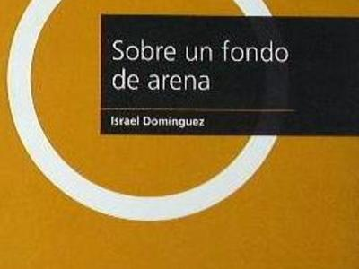
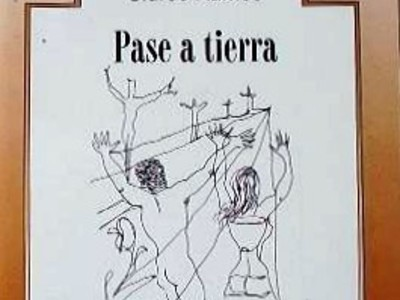
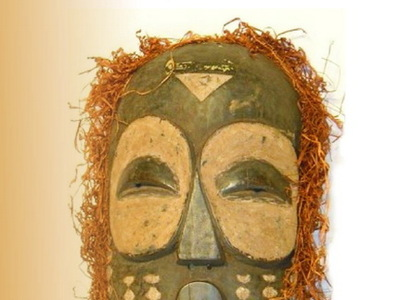
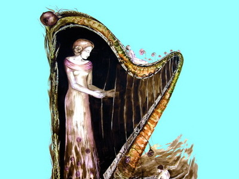
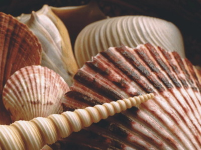

Colección surEditores


surEditores es la editorial del Festival Internacional de poesía de La Habana.
Manténte actualizado con las declaraciones del Movimiento Poético Mundial.
Entérate de las novedades literarias y mucho más directamente en tu buzón de correo

Dulce María Loynaz Muñoz, (La Habana, 10 de diciembre de 1902 / 27 de abril de 1997) Una de las principales figuras de la poesía lírica cubana y universal.
Leer más
José María Heredia. (Santiago de Cuba el 31 de diciembre de 1803; - Toluca (México) 7 de mayo de 1839).
Leer másPierre Bernet Ferrand (Guantánamo, Cuba, 1950)
Leer más






